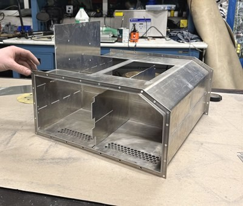
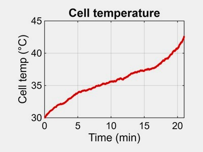
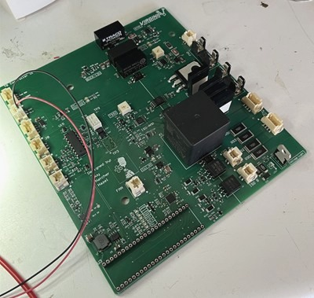
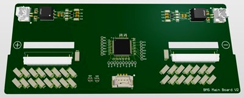
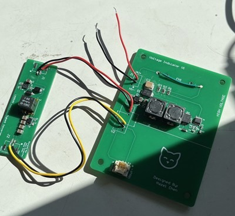
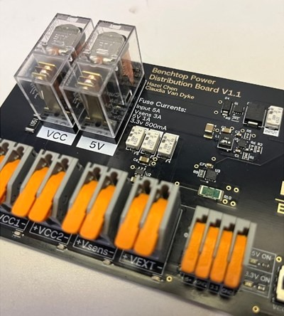
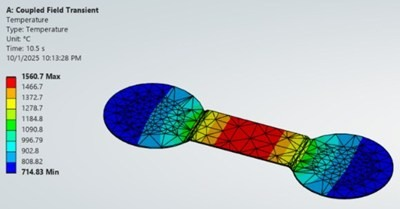
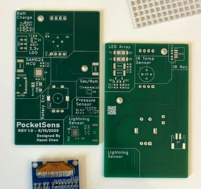
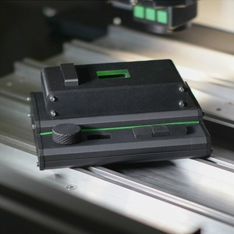
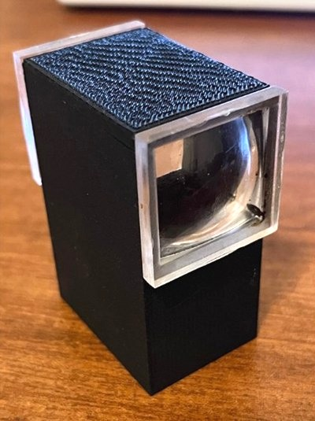

Hazel Chen
Third-year mechanical engineering student at the University of Virginia, minoring in electrical engineering. I focus on developing lithium-ion battery systems and electric vehicle components.
I lead the electrical and tractive battery subteam on the UVA Formula SAE EV team, where I work on the tractive battery and the high-voltage electronics around it. On my own time I build boards and devices, from a film-scanning light source to a pocket sensor kit. I like taking a project all the way from schematic and CAD to a working, tested part.
Work for Virginia Motorsports
Projects I worked on for Virginia Motorsports, UVA's Formula SAE team.
-

Tractive Battery
128S pouch-cell battery pack for our 2026-27 FSAE EV season.
Autodesk Fusion -

Tractive Battery Thermal Model
MATLAB model predicting cell temperature and state of charge over a full FSAE endurance run.
MATLAB -

High Voltage Controller (HVC)
One board for everything between the tractive battery and the car: precharge, contactors, isoSPI, and safety latches.
Altium Designer -

Segment BMS Rev 2
Two-board cell monitoring stack for each 16-cell segment. I redesigned it for Rev 2, cutting the cell tap board from 6 layers to 2.
Altium Designer -

High Voltage Indicator Light
Tractive-powered isolated supply driving a low-voltage panel-mount light whenever the tractive system is energized.
Altium Designer -

Benchtop Power Distribution Board
Switched, fused, and current-sensed 5 V, 3.3 V, and input rails for bench-testing custom PCBs.
Altium Designer -

Fusible Link Simulation
Coupled electro-thermal Ansys model of nickel-strip fusible links for a cylindrical-cell pack.
Ansys MechanicalWorkbench
Personal builds
Boards and devices I designed and built on my own.
-

PocketSens Portable Sensor Suite
Handheld board measuring pressure, gas, humidity, IR temperature, and lightning, on a SAMD21 with LiPo charging.
KiCadArduino IDE -

Future Frame LightCore
Five-channel RGB, white, and IR light source for film scanning, with its own enclosure and thermal design.
KiCadFusionCircuitPython -

Future Frame Hybrid Viewfinder
Optical viewfinder with an infinity-focused display overlay, using CNC-machined acrylic lenses.
Autodesk Fusion (CAD and CAM)
Skills showcase
Tools and software I've used in my projects.
Altium Designer
- Designed schematics, layouts, and released BOMs for the High Voltage Controller, handling precharge, discharge, and contactor sequencing for a 556 V pack
- Designed Segment BMS boards monitoring voltage and temperature for 16 cells per board
- Designed an isolated 10–30 V to 12 V flyback converter powering a panel-mount HV indicator light
Seen in: HVC, Segment BMS, HV Indicator, Benchtop PDB
KiCad
- Designed a high-power LED light source for film scanning, driving LEDs at 150+ mA with the AL8860WT, from schematic and layout through sourcing and assembly
- Developed an IR LED and photodiode front end for a portable fNIRS device at UVA WEARLab
Seen in: LightCore, PocketSens
Autodesk Fusion
- Designed mounts and packaged electronics inside the tractive battery, including contactor mounting, garolite insulation, busbar routing, and fuse placement
- Modeled HV and LV cable routing to verify fit and bend clearance before assembly
- Routed and constrained LV contactor coil wiring to keep HV/LV separation in the accumulator
Seen in: Tractive Battery, LightCore, Hybrid Viewfinder
Simulation and programming
- MATLAB: modeled heat generation and temperature rise of a cylindrical-cell pack, accounting for SOC-dependent DCIR and SOC depletion over a drive cycle
- Ansys Mechanical: ran coupled thermal-electrical simulations to find nickel-strip fusing current versus link geometry and thickness
- Arduino (nRF52840): wrote firmware to time-multiplex IR LED pulses and sample photodiodes, with dead time between pulses to reduce optical crosstalk
Seen in: Tractive Battery Thermal Model, Fusible Link Simulation
Electronics test equipment
- Probed and decoded isoSPI between segment BMS and MCU with a logic analyzer to validate readings
- Verified CAN signal integrity and waveforms on an oscilloscope
- Tested precharge with low-voltage bench supplies; extrapolated to pack voltage, the main contactor closes and precharge opens at 93%, above the 90% rules requirement
- Ran board bring-up and troubleshooting on a current-limited linear PSU
Seen in: Bring-up notes, HVC
PCB rework
- Replaced a failed SMD buck converter IC with a hot-air rework station
- Hand-soldered segment BMS boards, including 0402/0201 passives and fine-pitch LQFP packages
- Isolated shorts on populated boards by removing suspect parts with hot tweezers
Seen in: BMS Motherboard Hand Soldering, Segment BMS
Manufacturing
- Fabricated battery module assemblies on Bambu Lab X1C and H2C FDM printers
- Waterjet-cut aluminum segment walls and enclosure panels for the tractive battery
- Fabricated bent sheet metal parts for a custom Controleo3 reflow oven
- Maintain 8 FFF printers, a Formlabs SLA printer, and 2 CNC routers as a Maker Consultant
Seen in: Tractive Battery, Hybrid Viewfinder
Languages
- English (native)
- Mandarin Chinese (fluent)